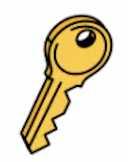

Abstract | Help CenterHow Can we help? →Branches
Abtract Branches lets you manage,
version, and document your design in
one place.
Learn More →Manage your account
Configure your account settings, such as
your email, profile details, and password
Learn More →Manage organizations, teams, and projects
Use Abstract organizations, teams, and
projects to organize your people and your
work.
Learn More →Manage billing
Change subscriptions and payment
details.
Learn More →

Authenticate to Abstract
Set up and configure SSO, SCIM, and
Just-in-Time provisioning.
Learn More →Abstract support
Get in touch with a human.
Learn More →